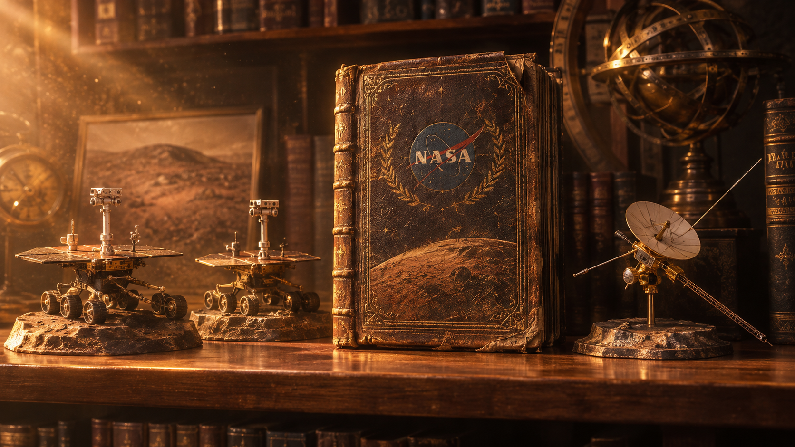
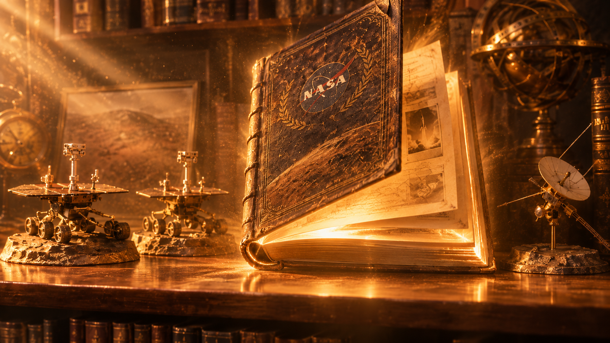

{{ h.code }}
{{ h.name }}
{{ h.years }}
OPEN CHAPTER →

OPENING THE ARCHIVE
Some journeys are measured in sols.
Part I · Mars Exploration Rovers
CHAPTER {{ e.num }}
{{ e.title }}
{{ e.sub }}
P. {{ e.page }}OPEN →
{{ ch.part }} · Chapter {{ ch.num }}
{{ p.cap }}
{{ ch.figTitle }}
FIG. 1
{{ partLabel }}
{{ partText }}
{{ ch.pageL }}
Part II · The Pioneer Program
CHAPTER {{ e.num }}
{{ e.title }}
{{ e.sub }}
P. {{ e.page }}OPEN →
{{ ch.title }}
{{ ch.subtitle }}
{{ ch.code }}
{{ ch.year }}
{{ ch.year }}
MISSION DATA
{{ r.k }}
{{ r.v }}
ABOUT THE MISSION
‹ CONTENTS
{{ ch.pageR }}
{{ nextLabel }} ›
STELLAR
SCRIPTS
SCRIPTS
The Mission Archive
OPPORTUNITY · SPIRIT · PIONEER 10 · PIONEER 11
EX LIBRIS
The Mission Archive
Ask the Archive
EXPLORE · LEARN · DISCOVER
{{ m.text }}
{{ m.text }}
searching the shelves…
Stellar Scripts
‹ RETURN TO SHELF
Stellar Scripts
THE MISSION ARCHIVE
or touch a model to jump to its chapter
SCREENS